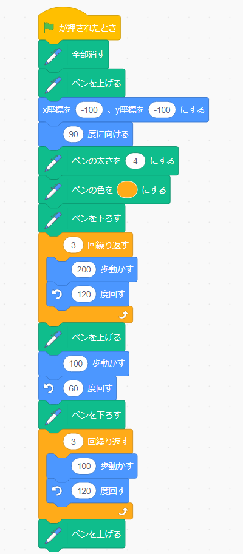
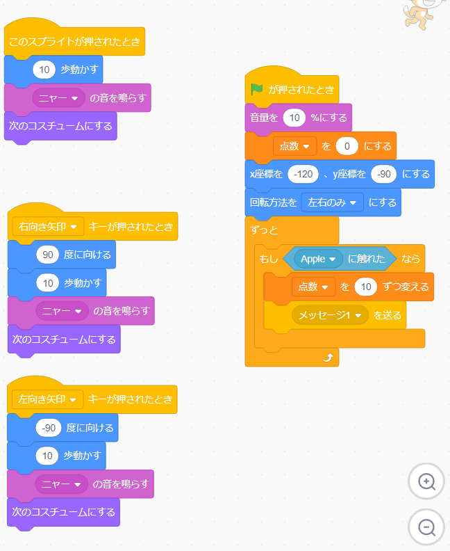

1週目のレポート ： 公大高専１年実習 I-1
01班23番 みどりむし
第1週目
1-1 サイエンスアート

1.内容
スクラッチを使って線を書くプログラムを作成した。 このプログラムを実行すると、ゼルダの伝説シリーズのトライフォースのような形のサイエンスアートができる。
2.感想
三角形の外角の計算と、中にある三角形を描くのが難しかった。
1-2 ゲーム

1.内容
スクラッチを使ってゲームのプログラムを作成した。 このプログラムを実行すると、左右キーで移動できる猫が上から降ってくるリンゴをとると10点分の点数が与えられ、 それを繰り返す。
2.感想
りんごの他にもバナナやミカンなどを使って、 どれを取るかによってそれぞれ点数が変わるプログラムを作ってみても面白そうだ。
1-3 ホームページ作成
私のホームページ
1.内容
内容は中身が何もないただの自己紹介文だが、ここに来るまでに結構苦労したし、 どこをどうすれば良いのかそれなりに迷った。
2.感想
最近あまり見ていないが、wikipediaなどはこうやって作られているのかと思うと、 内容の薄い記事でも結構手順踏んだりしているのだなと感じた。